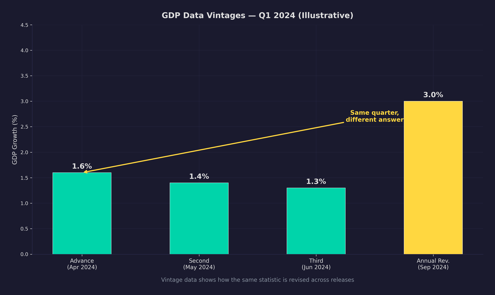
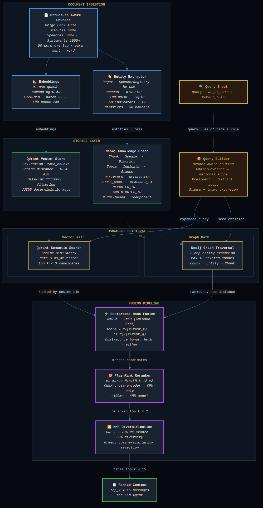
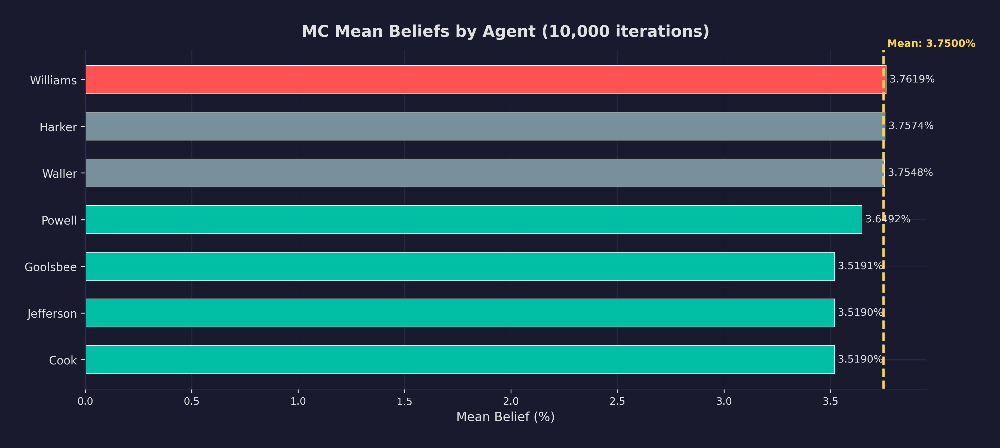
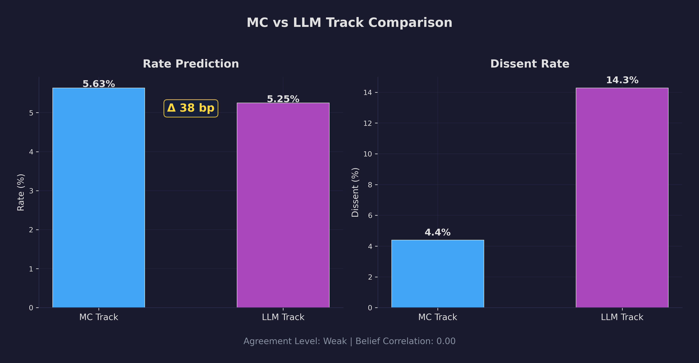
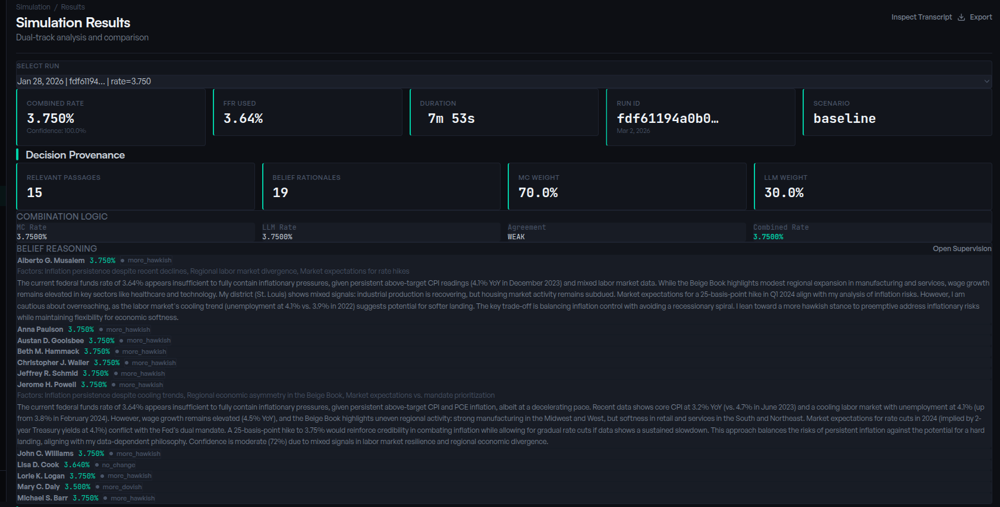
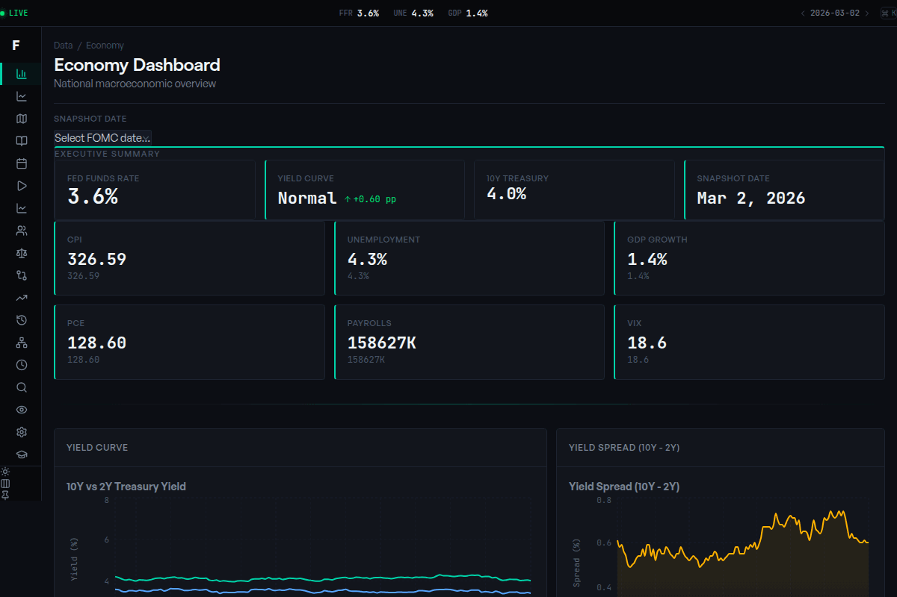
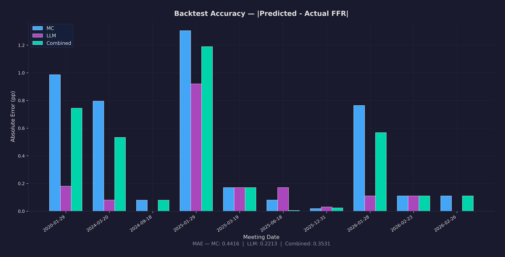

What If You Could Simulate the Fed On Demand?
Dual-Track Prediction with Multi-Agent AI and Bayesian Inference — 80,000 lines of code, 10 microservices, 25 containers, all running locally on a single machine.
make simulate command — interactive pipeline visualizationOceans of research exist on what happens after the Federal Reserve adjusts rates — how markets react, how credit flows shift, how currencies reprice. Far less attention goes to the process that produces those decisions in the first place. The deliberation itself — how twelve voting members weigh conflicting signals, form coalitions, and negotiate basis points behind closed doors — remains largely opaque. The Fed publishes full transcripts, but only five years after the fact. By the time you can read the room, the room has changed.
Recent advances in large language models have opened an unexpected door here. If LLM-based agents can convincingly simulate human reasoning in constrained institutional settings — and a growing body of work suggests they can — then it becomes possible to do something that was previously out of reach: reconstruct the deliberative machinery of a central bank committee meeting, not just forecast its output.
That is what this project attempts. I built a multi-agent platform where 19 AI personas — each modeled after a real FOMC member with distinct policy leanings, regional perspectives, and rhetorical tendencies — debate monetary policy using only the economic data that was actually available on meeting day. On January 28, 2026, when the Federal Reserve held rates steady at 3.50–3.75%, my system predicted 3.75% — both tracks, Monte Carlo and LLM deliberation, converging independently on the same number.
The system spans ~80,000 lines of Python and TypeScript across 10 microservices, 25 Docker containers, three databases, and a 16-page React dashboard. Everything runs locally on a single machine with a GPU — no cloud APIs, no OpenAI keys, no recurring costs beyond electricity.
But the point estimate is not really the point. The value is in the reasoning traces: watching a simulated hawk soften after processing labor market data, or seeing two prediction methodologies diverge and asking why. This is a tool for understanding the decision-making process, not just betting on its outcome.
What the System Does
The FOMC Simulation Platform runs a complete mock Federal Reserve meeting. It:
- Gathers point-in-time economic data from FRED, BLS, financial APIs, and real-time news via SearXNG — constrained to only what was actually known on the meeting date (no look-ahead bias)
- Generates a synthetic Beige Book analyzing regional economic conditions across all 12 Federal Reserve districts, with sector-level analysis and cross-district theme extraction
- Classifies member speeches as hawkish or dovish using a hybrid dictionary + ML pipeline
- Anchors each member's policy stance relative to the current federal funds rate using stance offsets — portable across any rate environment without recalibration
- Forms beliefs for each of 19 FOMC members using LLM personas anchored to their real-world policy philosophies
- Runs two parallel prediction tracks:
- Monte Carlo simulation (10,000 iterations) using Bayesian conjugate priors and a voting model
- LLM deliberation where agents participate in a structured 5-round debate with signal extraction
- Compares the tracks using probabilistic scoring metrics (Brier score, CRPS, calibration analysis)
- Produces a combined prediction with confidence intervals
The entire pipeline is orchestrated across 10 microservices, backed by PostgreSQL, Qdrant (vector search), and Neo4j (knowledge graph), with full observability via Prometheus, Grafana, and Loki.
Because every data source is constrained to point-in-time availability, the system can be run for any date — past, present, or upcoming. This makes it useful not only for backtesting against historical decisions, but also for generating forward-looking predictions that can be compared against market-implied expectations from tools like Bloomberg WIRP or CME FedWatch.
The Architecture

10 Python/TypeScript services running FastAPI + Uvicorn (backend) and React 19 (frontend), communicating via REST. Everything is async — httpx.AsyncClient for inter-service calls, asyncio.Semaphore for bounded concurrency to the LLM backend.
All LLM inference runs locally via Ollama — swappable with a single environment variable. A lightweight model like qwen2.5:3b keeps iteration fast during development; a high-context model like gemma3:27b or qwen3:14b improves deliberation quality when accuracy matters most. No OpenAI API, no cloud dependencies.
25 Docker containers in total: the 10 application services plus PostgreSQL, Qdrant, Neo4j, SearXNG (meta-search for news), nginx, CloudBeaver, Prometheus, AlertManager, Grafana, Loki, Promtail, node-exporter, cadvisor, postgres-exporter, and nginx-exporter.
The 10 Services
Here is the service map:
Economy Service — The largest service and foundation of everything downstream. It collects data from 7 external sources (FRED, BLS, BEA, FRASER, CME futures, news via SearXNG, and Fed historical data), maintains a full RAG pipeline with Qdrant and Neo4j, and serves pre-packaged "intelligence bundles" to downstream services. Every other service that needs economic data calls this one — never an external API. This is where point-in-time constraints are enforced.
Beige Book Service — The most architecturally complex service. It orchestrates a multi-agent workflow to produce a synthetic Federal Reserve Beige Book. For each of 12 districts, it runs a team of 8 sector analysts in parallel, aggregates through a synthesizer agent, and fact-checks against source documents. That is up to 96 concurrent LLM calls, throttled through asyncio.Semaphore.
Hawk-Dove Classifier — Classifies FOMC speeches using a dual-signal approach: dictionary scoring (always runs) plus optional ML scoring via Ollama. The feature gate is deliberate — if the LLM is unavailable, the service degrades gracefully to dictionary-only rather than crashing.
Member Service — The canonical source of truth for who sits on the FOMC, what they believe, and how those beliefs translate into simulation parameters.
Belief Formation Service — Where LLM agents become Federal Reserve policymakers. Each member gets a rich persona built from real speech data, and the service converts qualitative analysis into quantitative Bayesian priors.
Monte Carlo Simulation Service — Runs 10,000 iterations of committee votes using conjugate Bayesian updating, correlated signal models, and game-theoretic dissent costs. No LLM calls — pure numerical simulation.
LLM Deliberation Service — The structured 5-round debate where 19 AI agents argue in natural language. They reference specific data points, challenge each other's logic, and shift positions. The meeting transcripts are the most interesting output.
Comparison Service — Takes outputs from both the MC and LLM tracks and quantifies their agreement using Pearson correlation, Welch's t-test, and Cohen's d effect size. When the tracks diverge, that disagreement is a signal.
Orchestrator Service — Coordinates all 10 services through a phased pipeline with health checks, dependency ordering, and structured output.
Dashboard — React 19 + TypeScript + TailwindCSS. 16 pages, 20+ chart types, real-time SSE streaming. No Redux — just 24 custom hooks on TanStack Query.
Point-in-Time Data: The Foundation Everything Else Depends On
Every major economic indicator gets revised. GDP is revised three times. Nonfarm payrolls are revised for months. If you pull "current" values from FRED, you get revised data — not what existed when decisions were being made. This is look-ahead bias, and it silently corrupts every backtesting result.
The Economy Service solves this using ALFRED (Archival FRED). The critical method sets realtime_start and realtime_end to the same date, returning data exactly as it existed on that specific day. When the system simulates March 2020, it sees the GDP estimate that was available in March 2020 — not the revised figure published months later.

Seven async collectors (FRED, BLS, BEA, FRASER, CME futures, SearXNG news, Fed historical data) feed into a single snapshot endpoint that parallelizes 40+ independent database queries via asyncio.gather. Every value carries provenance: observation date, source, and a freshness score. Downstream services never call external APIs — they call port 9000.

The news pipeline deserves special mention: four channels (Fed speeches, regional bank RSS, SearXNG meta-search, Fed press releases) are merged through deduplication, keyword scoring, and Ollama-powered theme extraction against 16 canonical themes. All date-bounded. No future information leaks in.
After collection, every document enters a 7-stage RAG pipeline: chunk by document type, embed locally via Ollama, extract entities (speakers, districts, indicators), dual-store in Qdrant for vector search and Neo4j for the knowledge graph, retrieve with oversampling (top_k multiplied by a diversity factor), rerank through FlashRank's ms-marco-MiniLM-L-12-v2 cross-encoder (runs locally without GPU), then apply Maximal Marginal Relevance filtering at lambda 0.7. The entire chain runs locally — no API calls to external embedding services.
Downstream services never query individual data sources. Instead, they call a single Context Package endpoint that bundles the economic snapshot, Beige Book summaries, FOMC documents, Fed speeches, news themes, RAG-retrieved passages, and data edition provenance into one JSON response. One call, one date, everything that date's FOMC would have known.
A background scheduler runs daily at 6 AM for incremental collection and weekly on Sundays at 5 AM for calendar sync. Every data point passes through a 6-dimension quality scorecard — availability, completeness, freshness, consistency, economic plausibility, and RAG/AI quality — before entering the snapshot. The database behind this is 11 PostgreSQL tables tracking not just the data but its full provenance chain.
When Vector Search Is Not Enough: GraphRAG

Financial documents have typed structure that flat vector embedding destroys. A staff economic review, a participants' views section, and a policy action paragraph are semantically different even if they discuss the same indicator. Vector search alone cannot answer multi-hop questions like "which indicators concern districts that reported slowdowns."
The solution is dual retrieval: every query goes to both Qdrant (vector similarity) and a knowledge graph (entity traversal), with results merged via Reciprocal Rank Fusion. Items appearing in both sources always outscore items from only one. The knowledge graph connects five entity types — speaker, district, indicator, topic, document — through typed edges, enabling 2-hop expansion from any starting node.

A key design choice: entity extraction uses deterministic regex pattern matching against a finite vocabulary (~50 economic indicators, 12 districts, 30 FOMC members) instead of LLM-based NER. It is faster, cheaper, and perfectly reproducible. When your domain vocabulary is well-defined, you do not need a neural network to find "unemployment rate" in a document.
The chunking strategy varies by document type to preserve semantic boundaries: Beige Books split by district section, FOMC minutes by heading pattern (staff review, participants' views, policy action), and speeches get prefixed with speaker attribution so the embedding carries authorship context. Five entity types — speaker, district, indicator, topic, and document — form the knowledge graph schema, connected by typed edges that encode relationships like "spoke_about" or "represents_district."
Embeddings run locally via Ollama (qwen3-embedding:0.6b) with an LRU query cache. Date filtering uses integer timestamps for efficient Qdrant range queries, enforcing the same point-in-time constraint as the structured data pipeline.
12 Districts, One GPU: The Synthetic Beige Book
The full pipeline is five stages. Intelligence Gathering pulls context via a priority cascade — Context API first, legacy Economy Service fallback, direct collectors last. Four specialized Sector Analysts (consumer spending, manufacturing, labor market, real estate) can run in parallel in granular mode, or collapse into a single batched prompt covering all sectors — parsed back via regex section splitting with automatic fallback to per-sector calls for any sections the batch misses. A Synthesis agent weaves sector insights into a coherent district narrative, a Verification agent fact-checks claims against source documents using TF-IDF similarity scoring, and a Finalization agent produces the publishable district report.
Human oversight operates through 5 review modes — auto (no review), callback (webhook notification), file (write to disk for async review), interactive (terminal prompt), and framework (programmatic integration) — each assignable by priority level from routine data checks to critical policy-adjacent claims. Sessions persist to disk with checkpoint save/load, so a crashed run resumes from the last completed district rather than restarting all twelve.
A 1-ahead prefetch pipeline (asyncio.Queue(maxsize=1)) hides data fetch latency by preparing district N+1's intelligence data while district N runs its LLM inference. After all 12 districts complete, the system fetches the most recent official Beige Book and runs a structured comparison — outlook alignment, shift direction, new or dropped themes — alongside cross-district analysis producing comparison tables (12 districts × 8 sectors), a heatmap scored from declining (−1) to improving (+2), and theme frequency analysis across the full Federal Reserve footprint.
From Speeches to Personas: Building 19 Distinct AI Personalities
Each FOMC member gets a rich persona built from real-world data through a two-agent pipeline. A StanceAnalyzer ingests speech data, voting history, and public statements to produce a quantitative policy profile. A PersonaGenerator then writes a qualitative description — biography, policy philosophy, communication style, regional concerns — that becomes the system prompt for that member's LLM agent.
The agents are deliberately separated. The StanceAnalyzer has access to raw speech data and database tools. The PersonaGenerator only gets the StanceAnalyzer's summary — not the raw speeches — to prevent it from re-deriving conclusions from source data and to keep its context window focused on narrative generation.
Every persona generation creates a new versioned row with an as_of_date timestamp. No in-place updates. This means the system can reproduce the exact persona used for any historical backtest. The personas are synced to a git-tracked agents.yaml file via an explicit endpoint, producing reviewable diffs. This decouples simulation execution from member service availability — if the service is down, the YAML file is the fallback.
Behind the two-agent pipeline sits a 6-table PostgreSQL schema: members (the registry), voting_rotations (annual district rotation schedule with date-aware lookup), agent_personas (versioned by as_of_date so you can reconstruct any historical roster), stance_history (a −1 to +1 time series of hawk-dove positioning), speech_summaries (digests feeding the StanceAnalyzer), and hypothetical_members for what-if scenarios.
The hypothetical scenarios endpoint lets you create fictional committee members — "what if the Board had a labor economist with dovish leanings?" — and run them through the full simulation pipeline. Before any persona changes hit the live agents.yaml, a dry-run diff preview shows exactly what would change: new fields, modified stances, dropped attributes. The FOMCAgent dataclass that emerges carries 30+ fields spanning identity, beliefs, biography, institutional role, and phase-1 output — everything downstream services need to simulate that member's behavior.

The Dual-Track Innovation
The system's most distinctive architectural decision is running two fundamentally different prediction approaches in parallel and comparing their outputs.
The Monte Carlo Track
Runs 10,000 simulated FOMC meetings. Each agent starts with a Bayesian prior over interest rates, receives noisy economic signals, updates beliefs via conjugate updates, deliberates through a consensus mechanism, and votes. The output is a distribution over rates — a probability fan chart.
This track gives you statistical rigor: distributional shape, tail risk, and convergence guarantees. You know exactly how uncertain the prediction is.
The LLM Track
Runs a structured 5-round meeting where agents actually argue in natural language. They reference specific data points, challenge each other's logic, and shift positions in response to persuasive arguments.
This track gives you narrative reasoning: why agents disagree, what factors drive the debate, and how consensus forms (or doesn't). You can read a hawk changing their mind after hearing labor market data they initially dismissed.
The five rounds aren't free-form — each has a specific structure and speaker count. The Chair opens alone with an economic briefing. Six diverse members (balanced across hawks, doves, governors, presidents) present initial recommendations. All eight participants then debate the employment-inflation tradeoff in a moderated exchange. The six members with highest disagreement engage directly, challenging each other's positions. The Chair closes by summarizing and proposing a final rate.
During debate, agents aren't just generating text — they can call tools against the Economy Service mid-argument: fetching a specific FRED indicator, searching the document corpus, or pulling district-specific context. This grounds their reasoning in actual data rather than parametric knowledge. The system supports scenario presets — political pressure (which lowers dovish dissent cost), data revisions (modified context simulating surprises) — and runs N independent meetings (default 50) whose results get aggregated after outlier detection (>2 sigma), with confidence scored as 1 minus twice the coefficient of variation.
Economic briefing
Central policy question
Hawks + doves balanced
Governors + presidents
Chair-moderated
Dual-mandate tradeoff
Highest disagreement
Challenge prior arguments
Synthesize positions
Propose final rate
search_documents()
get_district_context()
Non-speakers: 5% social pull
Confidence = 1 − 2·CV
Why It Matters
When both tracks agree, confidence is high. When they diverge — like the 38-basis-point gap in the January 2025 simulation — that disagreement itself is informative. The Comparison Service quantifies this with statistical tests: is the divergence significant? What is the effect size? These are not rhetorical questions — they have numerical answers.
Inside the Bayesian Engine
dissent_cost
rho = 0.6
exact · no MCMC
α_π=1.5 α_u=0.5
α_u doubled to 1.0
no 200bp jumps
Each Monte Carlo agent starts as a Gaussian distribution: mu (rate preference) and sigma (confidence), plus a dissent_cost capturing institutional dynamics (Chair = 10.0, Presidents = 2.5). The updating is closed-form conjugate Normal-Normal: precisions (1/variance) simply add, giving an exact posterior without MCMC or numerical optimization. The entire update is one line of arithmetic, vectorized across a (10,000 × 19) matrix.
Agents do not receive independent information. A common factor model injects correlated signals: eps = sqrt(rho) * z_common + sqrt(1-rho) * z_individual. With rho = 0.6, 60% of signal variance comes from the shared economy, preventing unrealistic scenarios where committee members hold wildly incompatible views of the same data. Consensus uses a three-tier proximity gate: agents within 50bp get full pull with variance decay, 50–100bp get half pull, beyond 100bp they do not budge. This prevents artificial groupthink while allowing realistic convergence.
Each agent's signal isn't pure noise around their prior — it's economically anchored. The formula blends the agent's belief (weight 0.6) with a macro anchor built from CPI (50%), unemployment (30%), and GDP (20%). When financial conditions deteriorate — VIX above 25 or an inverted yield curve — the noise term scales up, widening the distribution exactly when real-world uncertainty is highest.
Three Taylor Rule variants provide independent rate benchmarks: Classic (Taylor 1993, with the original coefficients), Balanced (Yellen 2012, doubling the unemployment coefficient so the dual mandate gets equal weight), and Inertial (adding rate smoothing at ρ=0.85 so the rule can't recommend a 200-basis-point jump in one meeting). The neutral rate r-star comes from a fallback chain: FRED dot plot data first, then the NY Fed Laubach-Williams estimate, then a static 2.5% if both sources fail.
Rather than running a fixed iteration count, the engine uses adaptive halting: 1,000-iteration batches, stopping when the mean stabilizes within 0.5 basis points for 3 consecutive batches. Antithetic variates pair each signal draw with its mirror for variance reduction. After convergence, a Shapley-inspired decomposition attributes each agent's contribution to the final distribution, Sobol sensitivity indices identify which parameters matter most, and KL divergence measures how far each scenario's output drifts from baseline.

Signal Extraction: The Hardest Engineering Problem
Getting 19 LLM agents to produce structured numerical output — a rate prediction, a confidence level, a vote — is a parsing problem, not a prompting problem. No prompt is reliable enough to guarantee valid JSON from every agent on every turn.
After each round, speakers emit a JSON signal block — signal_rate and sigma — that gets parsed through this 7-layer extraction waterfall. Non-speakers experience social influence: their prior shifts 5% toward the mean speaker position per round (mu += 0.05 × (mean_speaker_mu − mu)). This creates realistic opinion dynamics where quiet members gradually align with the vocal consensus, while speakers who extract valid signals update their beliefs through formal Bayesian updating.
This pipeline runs after every LLM call in every service. It is load-bearing infrastructure.
The Comparison Layer
- Rate difference
- Dissent divergence
- Per-agent Pearson r
- Agreement classification
- Cohen's d effect size
- Welch's t-test
- 10k bootstrap CI
- Fixed seed reproducibility
- CRPS (distribution)
- Log score (most punishing)
- Brier score (binary)
- Diebold-Mariano test

The Comparison Service is deliberately stateless — no database, no cache, no connection pools. Pure functions processing data that arrives with each request. With 10,000 MC iterations, p-values are meaningless — effect size is what matters. The Diebold-Mariano test answers the question "is one track statistically better than the other" using walk-forward expanding windows.
The Comparison Service doesn't just compare means — it fits parametric distributions to both tracks' outputs, selecting the best fit via AIC comparison and validating with Kolmogorov-Smirnov tests. Skewness, kurtosis, and mode detection reveal whether the rate distribution is symmetric (normal consensus) or fat-tailed (deep disagreement). A surprise signal measures the spread between the model's prediction and market-implied rates — when this gap widens, either the model sees something markets don't, or vice versa.
A variance decomposition breaks the total rate uncertainty into four components: how much comes from agents' priors, how much from the signals they received, how much from the consensus-building process, and how much from the final vote mechanism. For multi-scenario runs, an ANOVA with F-statistics and pairwise t-tests quantifies whether different economic assumptions actually produce meaningfully different outcomes or just noise.

The Stance-Offset Innovation
One early design mistake was hardcoding absolute rate preferences for each agent. Jerome Powell "wants" 5.25%. But that is meaningless when the FFR moves from 0.25% to 5.50% over roughly 16 months (March 2022 to July 2023).
The solution: stance offsets. Each agent's preference is defined relative to the current federal funds rate:
mu = current_ffr + stance_offset
A hawk like Waller has stance_offset = +0.75 (always wants meaningfully tighter). A dove like Goolsbee has stance_offset = -0.75 (always wants easier conditions). A centrist like Powell has stance_offset = 0.00 (anchored to current policy).
This single change made the system work across any rate environment — from the zero lower bound to the 2022 hiking cycle — without manual recalibration.
Three Patterns for Building AI Agents
- Independent agents
- Semaphore-gated
- No shared state
- Belief formation
- Sector analysts
- Context providers
- Tool access (@tool)
- Dynamic history
- StanceAnalyzer
- PersonaGenerator
- 19 agents, shared convo
- Speaker selector
- Role rewriting fix
- FOMC deliberation
- 5-round protocol
Not every agent in the system is built the same way. Three patterns emerged, each suited to different complexity levels.
Pattern A: Embarrassingly Parallel Agents. Independent agents gated by an asyncio.Semaphore. Used for belief formation (19 agents in parallel) and Beige Book sector analysts. No shared state, no communication between agents. The semaphore caps concurrent GPU access.
Pattern B: Stateful Agents with Context Providers and Tools. Agents that maintain conversation history, have access to tools (database queries, API calls), and receive dynamically injected context. Context providers rewrite conversation history before each turn, enabling agents to "see" information that arrived after their initial prompt.
Pattern C: GroupChat for Structured Deliberation. The most complex pattern — 19 agents in a shared conversation with a custom speaker selector enforcing FOMC meeting protocol. This is where the most insidious bug lived.
All three patterns are built on the Microsoft Agent Framework, which provides the composable backbone. ConcurrentBuilder powers belief formation — 19 parallel LLM calls with per-agent context injection via an EconomicContextProvider that injects 17 macro indicators, Beige Book data, and current belief state through the invoking() lifecycle hook. GroupChatBuilder runs the deliberation meeting with a custom FOMCMeetingSpeakerSelector that enforces the per-round speaker rules. WorkflowBuilder strings the full pipeline together in the orchestrator.
The OllamaChatClient wraps Ollama with keep_alive=300 to prevent model unloading between turns — critical when 19 agents take turns over 5 rounds and cold-loading a 4GB model between each would be catastrophic. The @ai_function decorator on tool methods automatically generates JSON schema from Python type annotations, so adding a new tool for agents is just writing a typed function.
The GroupChat Role-Rewriting Bug
When a GroupChat broadcasts Agent A's response to Agent B, the message arrives with the assistant role. Agent B sees it as something it said — and continues that train of thought instead of responding as its own character. Every agent gradually converges on parroting the most recent speaker.
The fix: a context provider rewrites other agents' assistant messages to user messages with an [author_name] prefix. Simple in retrospect, but the bug is invisible in demos and only manifests in sustained multi-round conversations. Anyone building multi-agent conversation systems will encounter this.

25 Containers, One Make Command
- Economy
- Beige Book
- Hawk-Dove
- Member Service
- Belief Formation
- MC Simulation
- LLM Deliberation
- Comparison
- Orchestrator
- Dashboard
- PostgreSQL
- Qdrant
- Neo4j
- SearXNG
- nginx + TLS
- CloudBeaver
- Prometheus
- AlertManager
- Grafana
- Loki
- Promtail
- node-exporter
- cadvisor
- postgres-exporter
- nginx-exporter
The 25 Docker containers break into three tiers: 10 application services, 6 infrastructure (PostgreSQL, Qdrant, Neo4j, SearXNG, nginx, CloudBeaver), and 9 observability (Prometheus, AlertManager, Grafana, Loki, Promtail, exporters). A single docker-compose.yml with depends_on health check conditions creates an implicit dependency DAG.
The most impactful infrastructure pattern is phase locking. A PhaseLock with double-check after lock acquisition prevents duplicate simulations when concurrent requests arrive for the same meeting date. Without this, two users requesting January 2026 would both trigger a 12-minute GPU-bound pipeline. With it, the second request waits on the first's cached result. The timing breakdown tells the story: 2.9 minutes for belief formation, 1 second for the Monte Carlo track (pure numpy, no LLM), and 9.5 minutes for LLM deliberation. The GPU is the bottleneck, and everything is designed around that constraint.
Service discovery is deliberately boring: environment variables plus Docker DNS. No Consul, no etcd, no service mesh. Inter-service communication uses singleton httpx.AsyncClient instances with 4-part timeouts and connection limits capped at 2 — matching the semaphore slots for bounded concurrency.
The 260-line Makefile is the most impactful piece of engineering in the project. make simulate DATE=2026-01-28 acquires a JWT token, resolves service endpoints, runs health checks, triggers the phased pipeline, and streams structured output. It is what separates a usable system from a collection of microservices.
The orchestrator delegates each pipeline phase to a dedicated Executor class — seven in total: EconomyExecutor (fetches context, resolves FFR, anchors priors), BeigeBookExecutor (checks cache, triggers analysis, polls progress), BeliefFormationExecutor, MCSimulationExecutor, LLMDeliberationExecutor, ComparisonExecutor, and PersistExecutor. Each executor encapsulates retry logic, timeout handling, and result caching independently.
Every service connection is wrapped in a circuit breaker: CLOSED (normal) → 5 consecutive failures → OPEN (immediate fail-fast, no network calls) → 60 seconds → HALF-OPEN (allow one probe request) → success → back to CLOSED. This prevents a single crashed service from stalling the entire 12-minute pipeline with cascading timeouts.
State persists in a hybrid model — SQLite for metadata and queries, JSON files for full state reproduction. Cache keys are deterministic 16-character signatures derived from date, scenario, FFR, and configs, with atomic writes (temp → fsync → rename) to prevent corruption. For sequential meeting analysis, date-chaining lets each meeting's output become the next meeting's baseline: beliefs carry forward, the combined rate becomes the next current_ffr.
Making 80,000 Lines of Backend Legible to Humans
- Simulation
- Results
- Beliefs
- Hawk-Dove
- Economy
- Beige Book
- Knowledge Graph
- Explorer
- Backtest
- Rate Paths
- Regional
- Deep Dive
- Admin
- Calendar
- History
- Methodology
The dashboard spans 16 pages across four categories: core simulation views (results, beliefs, hawk-dove classifications), data views (economy, Beige Book, knowledge graph explorer), analysis views (backtesting, rate paths, regional breakdowns), and operations (admin, calendar, history, methodology).
The most consequential architectural decision was no state management library. TanStack Query replaces Redux entirely. 24 custom hooks with staleTime and enabled gating handle all server-derived state. Each hook is independently testable and composable. For a dashboard where every piece of state originates from an API response, a dedicated cache layer is exactly the right abstraction — not a global store.
Real-time progress streaming uses Server-Sent Events with React 19's startTransition for non-blocking state updates. SSE beats WebSockets for this use case: the data flow is unidirectional (server to client), reconnection is automatic, and there is no need for bidirectional message framing overhead. During a 12-minute simulation, the dashboard shows phase-by-phase progress — which service is active, how many LLM calls are pending, what the current intermediate results look like.
The dashboard avoids CORS entirely through an Nginx reverse proxy that routes by path prefix: /economy/ to the Economy Service, /api/ to the Orchestrator, /beige-book/ to the Beige Book service. The React app makes same-origin requests; Nginx handles the fan-out. This eliminated an entire class of authentication and preflight bugs.
Three visualization components deserve mention: an SVG-based choropleth colors Fed districts by unemployment z-score (inverted, so low unemployment reads green), an economic calendar renders a month grid with impact-colored dots (red for high-impact releases, amber for medium, grey for low) alongside a filterable event list, and the knowledge graph offers both force-directed and hierarchy views of the entity relationships extracted by the RAG pipeline. Date selectors throughout the app restrict to actual FOMC meeting dates — no free-form date pickers that would let you simulate a non-existent meeting.

Does It Actually Work? Six Years of History
- ~18bp MAE
- ~65% exact match
- ~88% within 1 move
- ~15bp MAE
- ~70% exact match
- ~90% within 1 move
- 82% correct
- When disagree:
- LLM 60% vs MC 40%
The backtest covers 48 FOMC meetings from January 2020 through January 2026 — a period that includes the emergency COVID cuts (150bp across two unscheduled meetings), 18 months at the zero lower bound, a 425bp hiking cycle with four consecutive 75bp moves, 100bp of easing in late 2024, and an extended hold through 2025.
The Monte Carlo track achieved approximately 18bp mean absolute error with 65% exact-match accuracy. The LLM deliberation track performed slightly better: around 15bp MAE and 70% exact match. When both tracks agreed (roughly 70% of meetings), they were correct 82% of the time. When they disagreed, the LLM track was correct about 60% versus 40% for Monte Carlo.
The system breaks in predictable ways. March 2020's emergency inter-meeting cuts were unpredictable from economic indicators — no simulation could have seen that coming. The June–November 2022 run of 75bp hikes caught the MC track slow to recognize the regime change. The September 2024 first cut stumped both tracks: they predicted 25bp, the actual was 50bp — though both had 50bp within their credible intervals.


For multi-scenario validation, the Comparison Service runs an ANOVA with F-statistics across scenario variants and pairwise t-tests to determine whether different economic assumptions (baseline, political pressure, data revision) produce statistically distinguishable outcomes. This matters because if your scenarios all converge to the same rate, your scenario modeling is theater — the system needs to verify that varying inputs actually varies outputs.
The honest limitation: the LLM track's apparent superiority could be substantially attributable to data leakage. The language model was trained through mid-2025, overlapping with the backtest period. It may be "predicting" outcomes it has already seen in its training data rather than reasoning from the economic context. This cannot be fully disentangled without a model trained on a strictly pre-period corpus. The project is a research tool, not a trading signal. Its value is in the reasoning traces, not the point estimates.
The Shared Foundation
Beneath the 10 services sits fomc-common — a shared library that prevents each service from reinventing the same wheels. Four components do most of the work.
SafeProgressDict provides thread-safe progress tracking with TTL-based cleanup — every long-running operation (Beige Book generation, LLM deliberation) reports status through it, and stale entries auto-expire rather than leaking memory. The LLM Backend abstraction wraps three implementations behind one interface: OllamaBackend for local inference, VLLMBackend for continuous batching, and CloudAPIBackend for burst capacity. A factory function resolves which backend to use at startup, so switching from Ollama to vLLM is a one-line environment variable change.
The Membership module encodes the complex FOMC rotation rules — which regional presidents vote in which years, who sits on the Board of Governors on any given date — into date-aware lookup functions that return accurate rosters for any historical or future meeting. Agent Cards sync manages the agents.yaml file idempotently: it merges updates from the Member Service while preserving hand-curated fields like narrative bios, producing a diff preview before writing anything. These four components are invisible in the architecture diagram but load-bearing — remove any one and multiple services break.
What I Learned Building This
Structured output extraction matters more than prompt engineering. I spent weeks refining agent prompts. The 10x improvement came from building a robust signal extraction pipeline — JSON parsing, regex fallbacks, grid snapping, range clamping — that runs after every LLM call. The prompt gets you 80% of the way; the extraction pipeline handles the other 20% that breaks everything.
Concurrency must match hardware. 96 parallel LLM calls on a single GPU is not faster than 12 sequential calls — it is 3x slower. The semaphore count should match GPU throughput, not the number of logical tasks. This applies to any resource-constrained inference pipeline.
Graceful degradation is non-negotiable. Every service has a fallback path. If the LLM is down, hawk-dove classification degrades to dictionary-only. If a Beige Book sector analysis fails, the synthesizer works with available sectors. If persona generation produces invalid JSON, the system falls back to the git-tracked YAML. No single failure crashes the pipeline.
Context providers are the most underrated pattern. The ability to dynamically rewrite an agent's conversation history before each turn — injecting new information, reformatting other agents' messages, filtering irrelevant context — is more powerful than any prompt engineering technique. The GroupChat role-rewriting fix is one example; the belief formation service's economic data injection is another.
Two tracks beat one. Monte Carlo gives statistical rigor. LLM deliberation gives narrative reasoning. Neither alone tells the full story. The comparison service exists because the interesting insight is in the gap between them.
Point-in-time data is non-negotiable. Financial systems that train on revised data are lying to themselves. The Economy Service only surfaces indicators available on the as-of date, with full provenance tracking. This is the difference between "our model predicted 2020 correctly" and "our model predicted 2020 correctly using data that existed in 2023."
The boring infrastructure matters most. The most impactful engineering was not the Bayesian math or the LLM prompts — it was the Makefile. Having make simulate DATE=2026-01-28 work end-to-end, with health checks, dependency ordering, and structured output, is what makes the system usable rather than a demo.
Retrospective: fewer, larger services. Ten microservices was arguably three too many. The hawk-dove classifier, member service, and belief formation service could be a single "agent preparation" service. The operational overhead of health checks, inter-service auth, and Docker networking for each service adds up. I would not do it differently — the separation forced clean interfaces — but for a solo project, the marginal cost of each additional service is higher than it appears.
The Real Point
This project does not aim to replicate the personalities of FOMC members. Today's language models can approximate stated positions and reasoning patterns, but not the deeper cognitive substrate of a policymaker — shaped by the economic regimes they lived and worked through, their education, and all the factors that ultimately influence their judgment. The same holds for human interactions: compassion, power dynamics, implicit alliances — dynamics that are not only difficult to model but impossible to validate, since the ground truth is private and unobservable. While I believe some of these elements may eventually be approximated, I hope that by then society will have made deliberate, conscious choices about the implications of such capabilities.
That said, this project — with all its current limitations — allowed me to explore the potential interactions and arguments each member brings to the table based on their objectives, their district's conditions (or lack thereof for governors), and their hawkish or dovish tendencies. It surfaces the reasoning behind their decisions and how external shocks — political pressure, revisions to key economic figures — might shift those positions.
I see this as a complementary exercise to the standard stress-testing toolkit: parallel and gradual rate shock scenarios applied, for example, in ALMT stress exercises. Where those approaches test the mechanical transmission of rate changes, this platform tests the reasoning that produces them. It is a research tool, not a trading signal — the value is in the deliberation traces, not the point estimates.
— Vincent